X2967–X3000¶
MacBeath Points, Dual Centers DC(X) / CD(X) & Central Line Intersections
X2967–X3000 (MacBeath Points, Dual Centers DC(X) / CD(X) & Central Line Intersections) — 16 representative centers (from 34 in collection) constructed on acute reference triangle \((a, b, c) = (5, 6, 7)\) with unit baseline AB = \(1\).¶
Group Preamble — MacBeath Points (Points lying on the MacBeath inconic)
The MacBeath inconic is the conic inscribed in triangle ABC having center X5 and foci X3 and X4. An equation for this conic in barycentric coordinates is
\(u^{2}\)\(x^{2}\) + \(v^{2}\)\(y^{2}\) + \(w^{2}\)\(z^{2}\) - 2wvyz - 2wuzx - 2uvxy = 0,
where (u, v, w) = (sin 2A, sin 2B, sin 2C), i.e.,\(u : v : w\) = X3.
In the parlance of TCCT, page 238, the MacBeath inconic is W(X184), with trilinear equation
\(U^{2}\)\(x^{2}\) + \(V^{2}\)\(y^{2}\) + \(W^{2}\)\(z^{2}\) - 2WVyz - 2WUzx - 2UVxy = 0,
where \(U : V : W\) = X184 = \(a^{2}\)cos A : \(b^{2}\)cos B : \(c^{2}\)cos C.
Points lying on the MacBeath inconic were contributed by Peter Moses (Hyacinthos, Nov. 12, 2004), and a selection of these are given here as X2967 to X2973. Comments written by Alexander Murray MacBeath are given in a Hyacinthos message of Dec. 12, 2004 from Antreas P. Hatzipolakis. See also MathWorld and more than a dozen Hyacinthos messages numbered between 10870 and 10923.
Macbeath authored articles entitled “The Deltoid I,” The Deltoid II,” and “The Deltoid III,” in Eureka. In the second of these, 11 (1949) 26-29, he introduces the conic as follows:
Lemma 1: Let O, H be the common points of a coaxal system of circles. Let a variable circle of the system cut the line of centres at C. Let T be a point on the circumference such that TC=k*OC, where k is a fixed ratio. Then the locus of T is a conic with foci at O,H. In Hyacinthos message 2009, dated Dec. 9, 2000, John Conway wrote This I know as “the MacBeath ellipse”, since Murray MacBeath wrote a nice article about it in “Eureka”, the Cambridge University undergraduate mathematical journal. Thus did the conic get its name. Points X339, X1312, and X1313 lie on the MacBeath inconic. Peter Moses (Nov. 12, 2004) noted that if X is on this conic, then the reflection of X in X5, and also the reflection of X in the Euler line, lie on the conic. He introduced the MacBeath circumconic, dual to the MacBeath inconic. The circumconic is given in barycentrics by
(sin 2A)yz + (sin 2B)zx + (sin 2C)xy = 0,
and in trilinears by
(cos A)yz + (cos B)zx + (cos C)xy = 0,
and it passes through Xi for I = 110, 287, 648, 651, 677, 895, 1331, 1332, 1797, 1813, 1814, 1815.
Group Preamble — Dual triangles, DC and CD Points (Dual triangles: DC points and CD points)
Suppose DEF is a triangle in the plane of triangle ABC. Let D' be the isogonal conjugate of the point of intersection of line EF and the line at infinity. Define E' and F' cyclically. The triangle D'E'F' is here named the dual of DEF. The vertices of D'E'F' lie on the circumcircle, and D'E'F' is similar to DEF. The duality is between the sidelines EF, FD, DE and the points D', E', F', respectively. For example, if E and F remain fixed and D varies, then D' remains fixed, while E'F' varies. Actually D'E'F' is the dual of any triangle homothetic to DEF. Indeed, DEF need not be a triangle but can be the union of three concurrent lines. (Proof of similarity follows from Theorem 6E in TCCT, as the “gamma triangle” there is the dual of a triangle whose sidelines are respectively perpendicular to those of DEF.)
Suppose U is a point having cevian triangle DEF and dual triangle D'E'F'. Then there exists a point DC(U) whose circum-anticevian triangle (TCCT, p. 201) is D'E'F'. The mapping DC is given for U =\(u : v : w\) (trilinears) by
DC(U) = vw/(bv + cw) : wu/(cw + au) : uv/(au + bv).
To construct DC(U) from U, let A' = AD'∩BC, and let A″ be the {B,C}-harmonic conjugate of A'. Define B″ and C″ cyclically. The lines AA″, BB″, CC″ concur in DC(U). Also, DC(U) = U-isoconjugate of the crosssum of U and X6.
If you have The Geometer’s Sketchpad, you can view DUAL TRIANGLE (DualTriangle.gsp).
The appearance of (i,j) in the following list means that Xj = DC(Xi):
1,81 2,6 3,275 4,2 5,288 6,83 7,1 8,57 9,1170 10,1171 20,1073 63,1172 64,801 66,76 67,671 68,2052 69,4 75,58 76,251 79,1255 80,88 81,2298 83,3108 85,1174 86,1126 92,284 95,1173 99,110 100,651 110,648 189,9 190,101 253,3 254,1993 255,829 256,1258 264,54 273,1167 280,222 286,943 290,98 309,947 311,1166 314,961 317,847 320,1168 321,1169 325,2065 329,282 330,31 335,1438 347,1433 485,588 486,589 513,1016 514,1252 519,2226 522,1262 523,249 596,593 648,112 651,1783 660,666 664,109 666,919 668,100 670,99 671,111 693,59 850,250 889,898 892,691 903,106 927,677 1000,89 1029,37 1031,39 1032,1249 1034,223 1121,2291 1131,493 1132,494 1138,323 1219,2221 1280,1462 1297,287 1305,1331 1441,1175 1494,74 1821,2311 1897,1461 1916,1976 1972,248 2113,239 2184,2287 2349,2341 2370,1797 2373,895 2481,105
The longest chain among the listed points is this one: 69 -→ 4 -→ 2 -→ 6 -→ 83 → 3108
Inversely, the circum-anticevian triangle of a point P is the dual of the cevian triangle of a point CD(P), given for P =\(p : q : r\) by the inverse of the DC-mapping; that is:
CD(P) = bc/(-a/p + b/q + c/r) : ca/(a/p - b/q + c/r) : ab/(a/p + b/q - c/r) = isogonal conjugate of X6-Ceva conjugate of P.
The appearance of (i,j) in the following list means that Xj = CD(Xi):
1,7 2,4 3,253 4,69 6,2 9,189 31,330 37,1029 39,1031 54,264 57,8 58,75 59,693 74,1494, etc. (Just transpose the pairs in the list for DC(U).)
The vertices of the dual D'E'F' of the cevian triangle of a point U =\(u : v : w\) are given by
Triangle D'E'F' can be obtained from DEF by translation, dilation, and rotation. First translate DEF by vector O'O, where O' = circumcenter of D'E'F' and O = circumcenter of ABC. Then dilate D'E'F' so that its circumradius is that of ABC. Then rotate D'E'F' so that angle AOD’ is twice the angle between lines BC and EF.
Group Preamble — Intersections of Central Lines
This section presents points X3000 to X3019 of intersection of lines listed in MathWorld’s Central Line. Contributed by Eric Weisstein, December, 2004.
X29671st MACBEATH POINT
X29682nd MACBEATH POINT
X29693rd MACBEATH POINT
X29704th MACBEATH POINT
X29715th MACBEATH POINT
X29726th MACBEATH POINT
X29737th MACBEATH POINT
X29748th MACBEATH POINT
X2975INSIMILICENTER(CIRCUMCIRCLE, AC-INCIRCLE)
X2976RADICAL CENTER OF {CIRCUMCIRCLE, INCIRCLE, AC-INCIRCLE}
X2977RADICAL CENTER OF {CIRCUMCIRCLE, NINE-POINT CIRCLE, AC-INCIRCLE}
